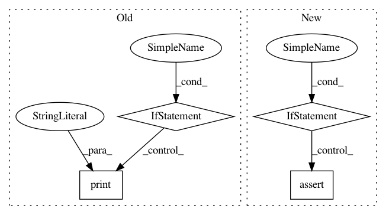

94805fb8054d3b68d037d324ee6d407f323df0cf,tcn/tcn.py,TCN,__init__,#TCN#,187
Before Change
if padding != "causal" and padding != "same":
raise ValueError("Only "causal" or "same" padding are compatible for this layer.")
if not isinstance(nb_filters, int):
print("An interface change occurred after the version 2.1.2.")
print("Before: tcn.TCN(x, return_sequences=False, ...)")
print("Now should be: tcn.TCN(return_sequences=False, ...)(x)")
print("The alternative is to downgrade to 2.1.2 (pip install keras-tcn==2.1.2).")
raise Exception()
// initialize parent class
super(TCN, self).__init__(**kwargs)
@property
def receptive_field(self):
After Change
self.lambda_layer = None
self.lambda_ouput_shape = None
if isinstance(self.nb_filters, list):
assert len(self.nb_filters) == len(self.dilations)
if padding != "causal" and padding != "same":
raise ValueError("Only "causal" or "same" padding are compatible for this layer.")
// initialize parent class
In pattern: SUPERPATTERN
Frequency: 3
Non-data size: 4
Instances
Project Name: philipperemy/keras-tcn
Commit Name: 94805fb8054d3b68d037d324ee6d407f323df0cf
Time: 2020-04-25
Author: premy.enseirb@gmail.com
File Name: tcn/tcn.py
Class Name: TCN
Method Name: __init__
Project Name: arogozhnikov/einops
Commit Name: 680f4831e6c8f3102be8d99056b746b48ce34051
Time: 2018-09-27
Author: iamfullofspam@gmail.com
File Name: einops.py
Class Name: TransformRecipe
Method Name: reconstruct_from_shape
Project Name: mariogeiger/se3cnn
Commit Name: 5cbf177e0615ef76e7d4457b9e3786f52a3d7cf4
Time: 2019-10-30
Author: lapchevsky.k@gmail.com
File Name: setup.py
Class Name:
Method Name: